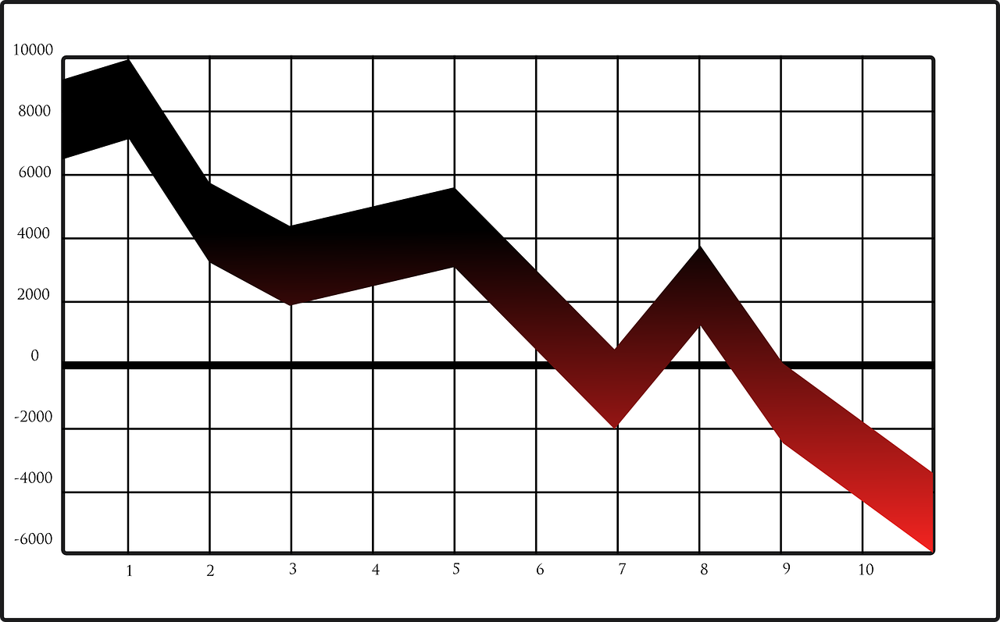

1929년 대공황은 미국을 비롯한 세계적인 경제 위기를 가리키는 용어로, 1929년 10월 29일에 발생한 월스트리트 대폭락을 중심으로 시작되었습니다. 이 날은 "겨울의 목요일" 또는 "블랙 투스데이"로 알려져 있습니다.

대공황의 주된 원인 중 하나는 주식 시장에서의 과도한 스펙레이션과 빚진 투자가 있었습니다. 1920년대 초반에는 미국에서 경제가 번창하며 주가는 계속 상승하였으나, 이에 따라 투자자들은 빚을 내어 주식에 투자하였습니다. 이후 1929년 10월에 주가가 급락하면서 수많은 투자자들이 큰 손실을 입게 되었고, 이로 인해 금융 시스템 전반에 대한 불안감이 커졌습니다.
대공황은 금융 붕괴뿐만 아니라 생산 활동과 무역에도 영향을 미쳤습니다. 소비와 투자가 급감하면서 고용이 감소하였고, 기업들은 생산을 줄이고 파산하는 등의 어려움을 겪었습니다. 이로 인해 세계적인 경제 불안과 불황이 퍼지면서 국제 무역은 감소하였고, 글로벌 경제에 큰 타격을 주었습니다.
대공황은 1930년대에도 계속되며, 이는 1930년에 시작된 미국의 농업 부분이 특히 큰 영향을 받았습니다. 농업 부분에서의 침체는 다시 한 번 경제 위기를 악화시키는 요인 중 하나로 작용했습니다. 이러한 상황은 긴 치욕적인 실업과 빈곤의 시기를 초래하였고, 이는 미국 정부와 기타 국가들이 대응하려고 노력하는 중요한 시기가 되었습니다.
대공황은 미국을 비롯한 세계적인 규모에서 경제적 충격을 일으켰으며, 이를 극복하기 위한 다양한 정책들이 시행되기 시작했습니다. 뉴딜 정책 등이 이러한 경제 위기를 극복하고 미국 경제를 회복하는 데 일부 기여하였습니다.